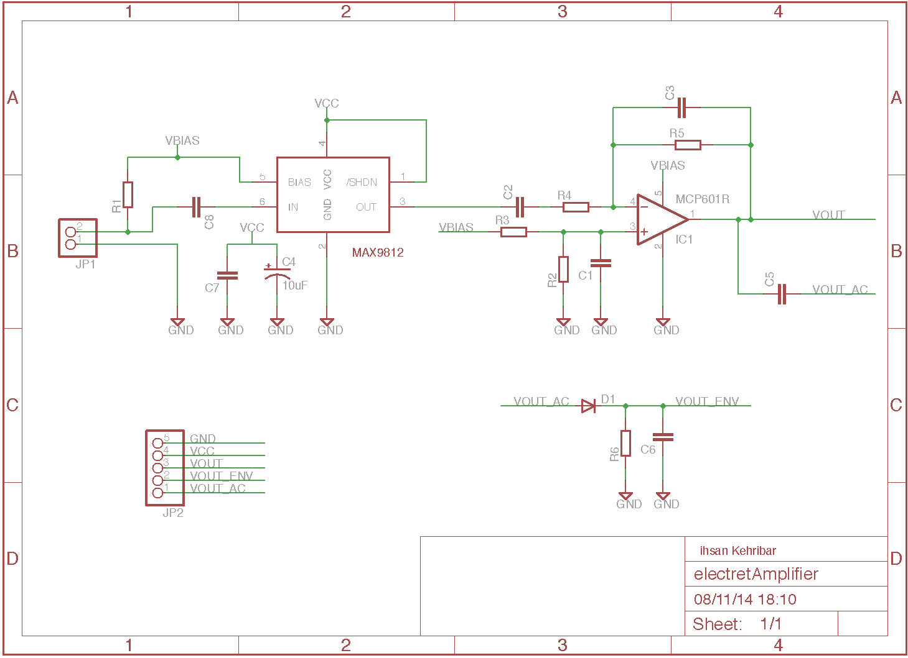
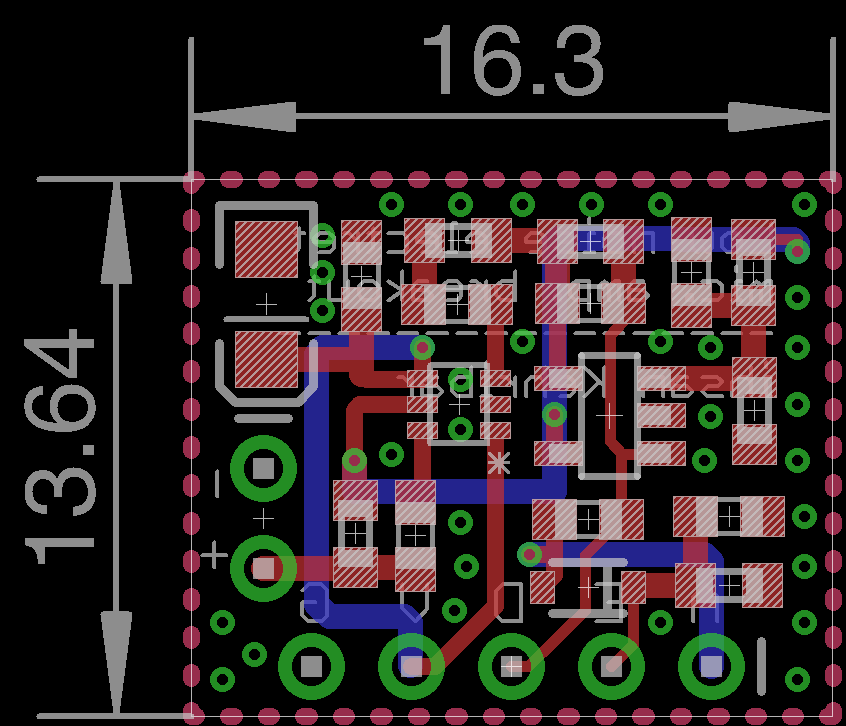
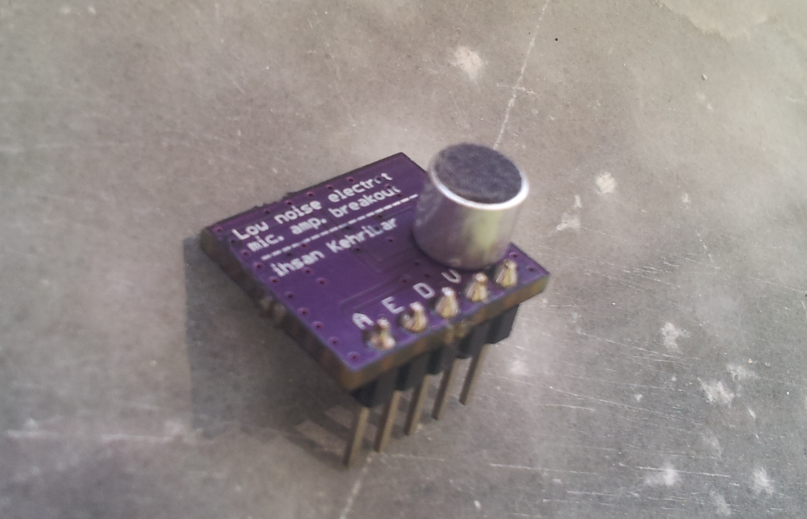
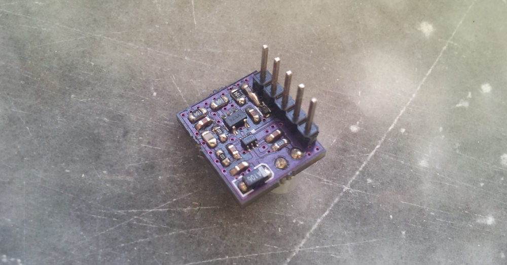

Low noise electret mic. amplifier
This is my first attempt to create a compact low noise amplifier for electret microphones. MAX9812 is great IC from Maxim and it generates very low noise bias voltage and it provides x100 fixed gain. I decided to create a design based around that chip.
During the design phase, in addition to fixed 100 gain, I put an inverting opamp amplifier with DC offset to give extra amplification to microphone signal. When I checked the MAX9812 datasheet I noticed that Output Current Limit for the Bias voltage pin is around 20mA so it is more than enough to supply power for the second stage opamp. By utilising that low noise voltage source as a power supply for the second stage I get pretty low noise performance.
This circuit outputs ~5 mVpp output voltage in almost silent environment with x1000 (x100 from MAX9812 and additional x10 from opamp) microphone gain. Also with an Arduino ADC test, silent readings are stable with at worst 2 ADC counts. Overall noise charactheristic of the system can be improved by replacing MCP601 with a much better opamp.
For the functionality, the breakout board has DC coupled VOUT pin for for easy ADC interfacing and AC coupled output for easy additional external audio amplifier stage interface. Moreover, I put a basic envelope detector circuit to create an easier loud/silent reading to be used with for example an hand clapping detection system.
Note: I used 1kOhm for R1; 100nF for C1,C2,C5,C6,C7 and C8; 10uF for C4; 100kOhm for R2 and R3; 10kOhm for R5 and R6; and finally 330pF for C3.
Schematic

Layout

Build



Resources
License
This project is published under the terms of the GNU General Public License, version 3 licence.


{kind=link}
{kind=link}